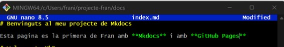

Pràctica MkDocs + GitHub Pages
Primer instal·lem Mkdocs al equip

Crea un nou projecte de MkDocs al teu ordinador.
El primer pas per a crear el projecte es un mkdocs new, i després ens situem dins del directori que s’ha creat. Es pot observar que dins del projecte, per defecte ja tenim el directori docs, que dins hi ha un fitxer index.md i el mkdocs.yml.

Escriu la documentació del vostre projecte en format Markdown.
El fitxer que anem a escriure a MarkDown es el que es troba en la següent ubicació.

Afegim aquest contingut a la pagina. També cal dir que aquest fitxer ja porta text per defecte.

Genera la pàgina web amb MkDocs.

Per a poder veureu al navegador, fiquem la URL que ix a la ultima línia de la imatge anterior.

Crea un repositori al GitHub per al teu projecte.

Ara, dins de la carpeta del projecte que hem creat abans al equip, no al GitHub de la imatge anterior, fem les següents comandes.

Seguidament, al repositori de GitHub ens apareix ja el que havíem fet amb Mkdocs.

Puja la pàgina web a GitHub Pages.
Amb el següent comandament de Mkdocs podem publicar directament a GitHub Pages.
Aquesta comanda s'ha de fer dins del directori arrel del projecte, en aquest cas en projecte-fran.

Després ja podem veure una branca nova a GitHub amb el nom anterior.

Ara mateix ja tenim desplegada la pagina a GitHub Pages.
Comprova que la URL de la teua pàgina web a GitHub Pages funciona correctament.
I per a veure el desplegament podem anar a la URL que es veu a la imatge.

Com has desplegat la teua pàgina web a GitHub Pages?
L’he desplegat fent un mkdocs gh-deploy.
Per tant, cada vegada que es faça un canvi al .yml del directori docs, ens situem al directori arrel, en aquest cas projecte-fran, i fem la comanda anterior per a que s’actualitzen els canvis a GitHub Pages.
La pàgina web es visualitza correctament? Incloure la URL a la pagina de GitHub.
La pàgina es veu correctament.
La URL al repositori de GitHub es: GitHub La URL a la pagina de GitHub Pages es: Pages